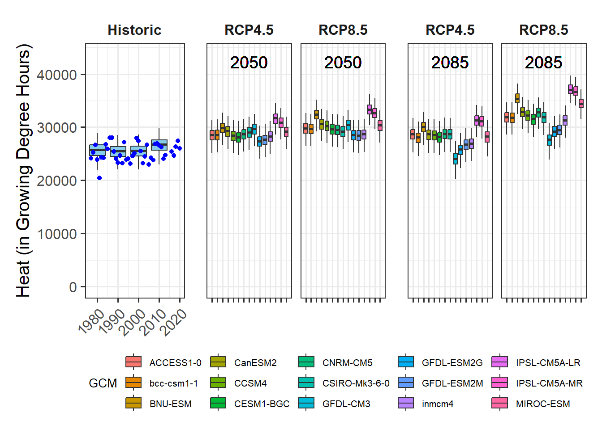

Chapter 15 Plotting future scenarios
15.1 Produce similar plots for the weather station you selected for earlier exercises.
library(chillR)
library(reshape2)
library(ggplot2)
library(ggpmisc)
library(patchwork)
library(kableExtra)
chill_past_scenarios <- load_temperature_scenarios(
"data/chill",
"CapeTown_historic")
chill_observed <- load_temperature_scenarios(
"data/chill",
"CapeTown_observed")
chills <-make_climate_scenario(
chill_past_scenarios,
caption = "Historic",
historic_data = chill_observed,
time_series = TRUE)
RCPs <- c("rcp45","rcp85")
Times <- c(2050,2085)
for(RCP in RCPs)
for(Time in Times)
{chill <- load_temperature_scenarios(
"data/chill",
paste0("CapeTown_",Time,"_",RCP))
if(RCP == "rcp45") RCPcaption <- "RCP4.5"
if(RCP == "rcp85") RCPcaption <- "RCP8.5"
if(Time == "2050") Time_caption <- "2050"
if(Time == "2085") Time_caption <- "2085"
chills <- make_climate_scenario(
chill,
caption = c(RCPcaption, Time_caption),
add_to = chills)
}
for(nam in names(chills[[1]]$data))
{
ch<-chills[[1]]$data[[nam]]
ch[,"GCM"] <- "none"
ch[,"RCP"] <- "none"
ch[,"Year"] <- as.numeric(nam)
if(nam == names(chills[[1]]$data)[1])
past_simulated <- ch else
past_simulated <- rbind(past_simulated,ch)
}
past_simulated["Scenario"] <- "Historic"
past_observed <- chills[[1]][["historic_data"]] #simplyfying pointerfor(i in 2:length(chills))
for(nam in names(chills[[i]]$data))
{ch<-chills[[i]]$data[[nam]]
ch[,"GCM"] <- nam
ch[,"RCP"] <- chills[[i]]$caption[1]
ch[,"Year"] <- chills[[i]]$caption[2]
if(i == 2&nam == names(chills[[i]]$data)[1])
future_data <- ch else
future_data <- rbind(future_data,ch)
}This is are the three different dataframes we need to plot the full graph. For the historic data, we have the metrics calculated from the simulated weather and extra data for the geom_point() plot. The dataframe for the future part of the plot, contains all the information, so that we can easily split it into the subplots with the facet_grid() function.
| Season | End_year | Season_days | Data_days | Perc_complete | Chill_CP | Heat_GDH | Frost_H | GCM | RCP | Year | Scenario |
|---|---|---|---|---|---|---|---|---|---|---|---|
| 2000/2001 | 2001 | 123 | 123 | 100 | 40.01651 | 25461.99 | 0 | none | none | 1980 | Historic |
| 2001/2002 | 2002 | 123 | 123 | 100 | 36.19151 | 26279.66 | 0 | none | none | 1980 | Historic |
| 2002/2003 | 2003 | 123 | 123 | 100 | 43.94242 | 25793.20 | 0 | none | none | 1980 | Historic |
| 2003/2004 | 2004 | 123 | 123 | 100 | 42.50185 | 24986.08 | 0 | none | none | 1980 | Historic |
| 2004/2005 | 2005 | 123 | 123 | 100 | 44.96755 | 25097.39 | 0 | none | none | 1980 | Historic |
| Season | End_year | Season_days | Data_days | Interpolated_days | Perc_complete | Chill_CP | Heat_GDH | Frost_H |
|---|---|---|---|---|---|---|---|---|
| 1976/1977 | 1977 | 123 | 123 | 1 | 99.18699 | 47.35204 | 24188.96 | 0 |
| 1977/1978 | 1978 | 123 | 123 | 0 | 100.00000 | 38.61035 | 25274.43 | 4 |
| 1978/1979 | 1979 | 123 | 123 | 0 | 100.00000 | 39.52377 | 26679.28 | 0 |
| 1979/1980 | 1980 | 123 | 123 | 0 | 100.00000 | 45.20518 | 23928.95 | 0 |
| 1980/1981 | 1981 | 123 | 123 | 0 | 100.00000 | 58.06163 | 20428.03 | 2 |
| Season | End_year | Season_days | Data_days | Perc_complete | Chill_CP | Heat_GDH | Frost_H | GCM | RCP | Year |
|---|---|---|---|---|---|---|---|---|---|---|
| 2000/2001 | 2001 | 123 | 123 | 100 | 26.74566 | 27971.20 | 0 | bcc-csm1-1 | RCP4.5 | 2050 |
| 2001/2002 | 2002 | 123 | 123 | 100 | 26.81553 | 29202.97 | 1 | bcc-csm1-1 | RCP4.5 | 2050 |
| 2002/2003 | 2003 | 123 | 123 | 100 | 28.98867 | 28645.35 | 0 | bcc-csm1-1 | RCP4.5 | 2050 |
| 2003/2004 | 2004 | 123 | 123 | 100 | 32.31504 | 27616.76 | 0 | bcc-csm1-1 | RCP4.5 | 2050 |
| 2004/2005 | 2005 | 123 | 123 | 100 | 33.57207 | 28098.57 | 0 | bcc-csm1-1 | RCP4.5 | 2050 |
plot_scenarios_gg <- function(past_observed,
past_simulated,
future_data,
metric,
axis_label)
{
rng <- range(past_observed[[metric]],
past_simulated[[metric]],
future_data[[metric]])
past_plot <- ggplot() +
geom_boxplot(data = past_simulated,
aes_string("as.numeric(Year)",metric,group = "Year"),
fill = "skyblue") +
scale_y_continuous(limits = c(0, round(round(1.1*rng[2])))) +
labs(x = "Year", y = axis_label) +
facet_grid(~ Scenario) +
theme_bw(base_size = 15) +
theme(strip.background = element_blank(),
strip.text = element_text(face = "bold"),
axis.text.x = element_text(angle=45, hjust=1)) +
geom_point(data = past_observed,
aes_string("End_year",metric),
col="blue")
future_plot_list <- list()
for(y in c(2050,2085))
{
future_plot_list[[which(y == c(2050,2085))]] <-
ggplot(data= future_data[which(future_data$Year == y),]) +
geom_boxplot(aes_string("GCM", metric, fill="GCM")) +
facet_wrap(vars(RCP)) +
scale_x_discrete(labels = NULL, expand = expansion(add = 1)) +
scale_y_continuous(limits = c(0, round(round(1.1*rng[2])))) +
geom_text_npc(aes(npcx = "center", npcy = "top", label = Year),
size = 5) +
theme_bw(base_size = 15) +
theme(axis.ticks.y = element_blank(),
axis.text = element_blank(),
axis.title = element_blank(),
legend.position = "bottom",
legend.margin = margin(0, 0, 0, 0, "cm"),
legend.background = element_rect(),
strip.background = element_blank(),
strip.text = element_text(face = "bold"),
legend.box.spacing = unit(0, "cm"),
plot.subtitle = element_text(hjust = 0.5,
vjust = -1,
size = 15 * 1.05,
face = "bold"))
}
plot<- (past_plot +
future_plot_list +
plot_layout(guides = "collect",
widths = c(1,rep(1.8,length(future_plot_list))))) +
plot_annotation(theme =
theme(plot.title = element_text(size = 24))) &
theme(legend.position = "bottom",
legend.text = element_text(size=8),
legend.title = element_text(size=10),
axis.title.x = element_blank())
}The plots show the calculated Growing Degree Hours, Chill Portions and Frost Hours for the historic records and four simulated future scenarios. The simulation reveals that Growing Degree Hours will increase, while the Chill Portions decrease. Some GCMs contradict each other, but due to the use of this GCM ensemble we can still recognize clear trends. In the past, there were only a few frost hours, which will most likely not change in the future except for a few outliers.
CapeTown_Heat_GDH <- plot_scenarios_gg(past_observed=past_observed,
past_simulated=past_simulated,
future_data=future_data,
metric="Heat_GDH",
axis_label="Heat (in Growing Degree Hours)")
CapeTown_Heat_GDH
CapeTown_Chill_CP <- plot_scenarios_gg(past_observed=past_observed,
past_simulated=past_simulated,
future_data=future_data,
metric="Chill_CP",
axis_label="Chill (in Chill Portions)")
CapeTown_Chill_CPCapeTown_Frost_H <- plot_scenarios_gg(past_observed=past_observed,
past_simulated=past_simulated,
future_data=future_data,
metric="Frost_H",
axis_label="Frost duration (in hours)")
CapeTown_Frost_Hggsave("plots/CapeTownPlot_Heat_GDH.png",
CapeTown_Heat_GDH, width = 10, height = 5, dpi = 800)
ggsave("plots/CapeTownPlot_Chill_CP.png",
CapeTown_Chill_CP, width = 10, height = 5, dpi = 800)
ggsave("plots/CapeTownPlots_Frost_H_RED.png",
CapeTown_Frost_H, width = 10, height = 5, dpi = 800)